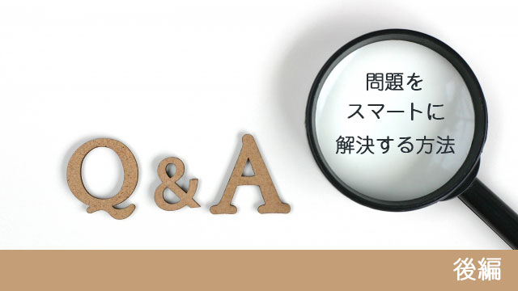

先週の内容をまとめます。
①「良い悪い」「被害者だ加害者だ」という判断をやめる
↓
②ニュートラルなポジションに立つ
↓
③相手の立場（感情）を感じてみる
↓
④新たな提案（解決法）を実行する
ということになります。
そして時には①～③だけで解決することもあります。④の解決策はいらないこともあるのです。判断・判定をせず自分の立場に固執することをやめ、ただ相手の気持ちを理解しただけで、つまり何ら具合的なアクションを起こさなくても事態が収拾してしまうケースです。
対人関係の「問題」というのは基本的に二項対立の状態なので、相手を理解するという心的態度に変わることで「対立」が解消するのでしょう。
相手の気持ちに寄り添ってみるだけで「問題」そのものが消えてしまうという不思議な体験は私も何度も経験しています。
解決へ向けてアレコレ画策している時はあれ程膠着していた問題が、相手の気持ちを想像しただけで解決してしまう。
これは大きな問題であっても同じです。
かつてこういうことがありました。
私の経営する会社にある大きな組織から仕事の依頼があり、とても有利な条件でもあったので私たちは喜んで依頼に応じたのですが、実際に仕事を始める段階で契約交渉が進まなくなったのです。
「形式だけの確認作業ですから大丈夫です」と相手の担当者は言いますが、予定を過ぎてもまとまりません。あげく仕事の内容や細かい文言について事あるごとに修正を迫ってくるのです。
既に社内で準備などに多くの労力と費用をかけていた私たちは焦りました。予定を三ヶ月過ぎても契約書にサインできないのです。
私たちは、もしかして騙されているのか…と疑心暗鬼になりかけていました。私の部下もついには交渉打ち切りを提案する事態です。
ここで私は部下から引き継いで自ら直接交渉に乗り出しました。相手方の担当者は電話口で「実は本部の法務部がなかなか納得せず私も困っているのです」と言います。
そこで私は顔の見えない「法務部」の人たちの気持ちになってこの問題を見つめてみようと思いました。「騙されているのではないか」「俺たちは被害者だ」という思いをいったん捨て去り、彼らの目で今の状況を見てみたのです。
すると「不安なのだ」という思いが浮かんできました。ヒントは、担当者が言った「法務部の人事が刷新された」というコトバでした。
「新しく就任した人たちはこの契約で失敗したくないのだ。不安だから慎重になっている…」そう思ったのです。
すると私の気持ちも一変しました。
焦りや「どうなってるんだ！」という怒りは消えました。そこで私はこう伝えたのです。
「分かりました。契約を慎重にやりたい本部の気持ちも理解できます。もう急ぎません。いや、むしろじっくり時間をかけてお互いが納得いくまでトコトン腰をすえてやりましょう。」
私は心の底からそう思い電話を切りました。
10分程立って担当者から再び電話があり、彼は興奮した調子で私に言いました。
「いま、先生のお話を伝えたところ、法務部がOKを出しました。」
三ヶ月以上停滞していた「問題」が10分で消えた瞬間でした。
問題を解決しようとしない
最後に大事なことを一つ申し上げます。
それは心構えとして「問題を解決しようとしない」という姿勢でいて欲しいということです。
私たちは日頃から問題を作り出してしまう性質があります。若い頃の私たちのように、性急に判断を下したり、相手の言動に対して一喜一憂したり思い込みで行動したりと、問題でないことまで問題化してしまいがちです。
ですから初めから「問題だと見えること」であっても問題と考えない姿勢が大切なのです。その上で解決すべき事柄があるとしても、それは単なる「出来事」として淡々と臨めばいいのです。
「あえて解決しようとしない」「解決などしなくていいのだ」
そういう姿勢であるとき、かえって解決していたという自然な流れが起こります。
まさに先の私の交渉でも、私は「こちらの思うようにいかなくても構わない」という気持ちで臨みました。
どちらかといえば「人間関係の改善」を目指すような感じでした。
ですから今日の私の「問題解決法」もメソッドやマニュアルのように考えるのではなく、人間関係を良くするツールという程度で使って欲しいと思います。
コツはあくまで「解決しようとしない」こと。それよりむしろ相手を安心させる第三の道を一緒に模索する。
そんな心のあり方こそ大切だと思います。
なぜなら問題解決の本質は、エゴからの脱却だからです。
いかに自分のエゴ（囚われ）から抜け出し物事を中立に見るか。エゴ的視点から離れて現実をクリアに見ることが出来るか。
まさにそこにかかっていると言えるでしょう。